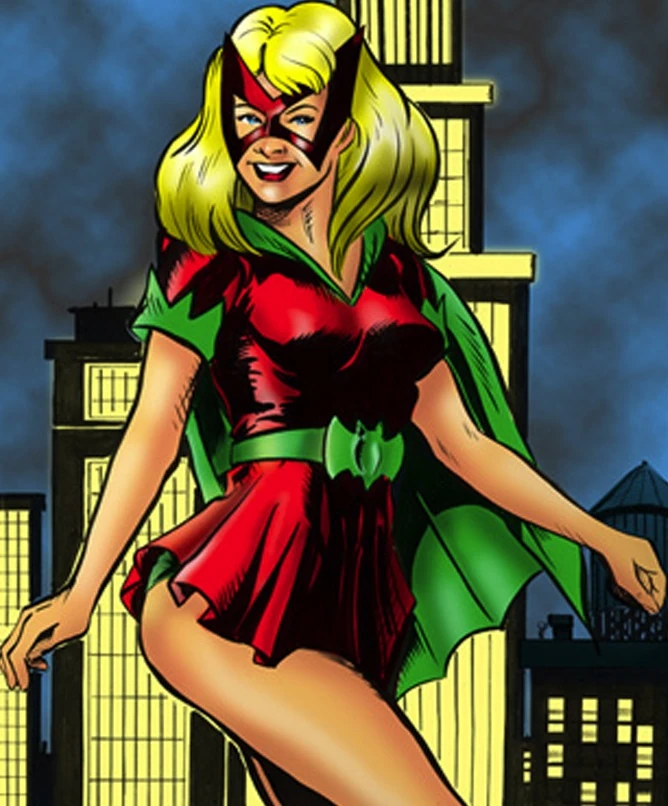
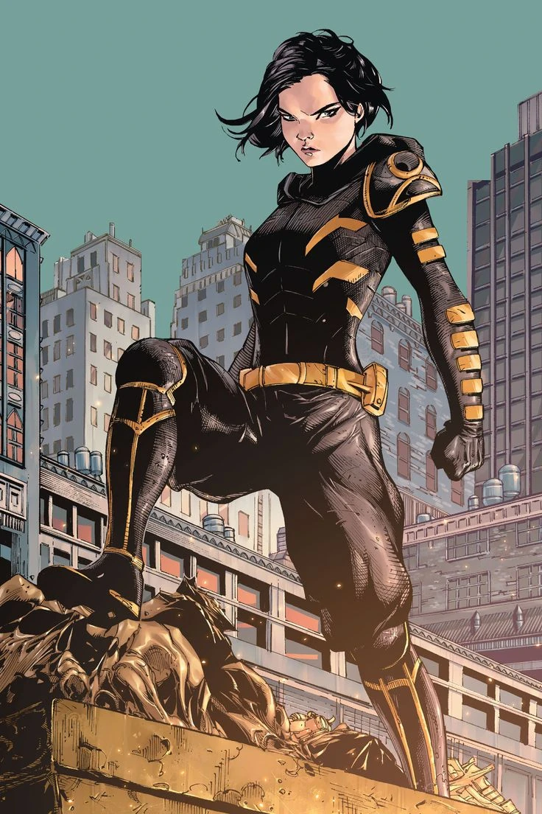

As Batgirls são um grupo de heroínas que operam em Gotham City, inspiradas pelo símbolo do Batman e dedicadas à luta contra o crime. Cada Batgirl possui sua própria história, habilidades e personalidade, mas todas elas compartilham o mesmo ideal: justiça para todos.
Barbara Gordon

Origem
Barbara Gordon é uma das personagens mais icônicas do universo DC. Ela fez sua estreia como Batgirl em 1967, na revista "Detective Comics". Filha do Comissário James Gordon, Barbara foi inspirada pelo trabalho de Batman e decidiu se tornar uma heroína mascarada para combater o crime em Gotham City.
Carreira como Batgirl
Barbara Gordon teve uma carreira notável como Batgirl, demonstrando habilidades excepcionais em combate corpo a corpo, inteligência e dedicação ao combate ao crime. Sua versão como Batgirl é uma das mais conhecidas e reverenciadas pelos fãs de quadrinhos.
Oracle
Um dos momentos mais marcantes na história de Barbara Gordon foi quando ela foi baleada pelo Coringa em "Batman: A Piada Mortal". Esse evento levou à paralisia de Barbara e à sua transição para a identidade de Oracle, uma especialista em tecnologia e informação que fornece suporte para outros heróis.
Fim da carreira de Batgirl
Após sua paralisia, Barbara Gordon assumiu a identidade de Oracle. Como Oracle, ela desempenhou um papel fundamental na comunidade super-heroica, fornecendo inteligência, suporte técnico e coordenação para diversos heróis.
Betty Kane
Origem
Betty Kane fez sua primeira aparição nos quadrinhos em 1961, na revista "Batman". Ela foi introduzida como a prima de Kathy Kane, a Batwoman original. Inspirada pela carreira de sua prima como vigilante, Betty expressou o desejo de seguir seus passos como uma heroína mascarada. Assim, ela se tornou a primeira Batgirl.
Carreira como Batgirl
Como Batgirl, Betty teve algumas aventuras ao lado de Batman e Robin. Ela compartilhou o compromisso de combater o crime em Gotham City, usando sua inteligência e habilidades atléticas para ajudar a proteger a cidade.
Acontecimentos Importantes
Um dos momentos significativos na trajetória de Betty como Batgirl foi quando ela se juntou à equipe conhecida como "As Aves de Rapina". Este grupo, liderado por Barbara Gordon (a segunda Batgirl, que originalmente era a identidade secreta de Oracle), incluía várias heroínas femininas da DC. A participação de Betty nas Aves de Rapina expandiu seu papel no universo DC e a colocou em contato com outros heróis.
Fim da carreira de Batgirl
Após um período como Batgirl, Betty eventualmente desistiu do manto. Sua persona como heroína não foi tão duradoura quanto a de outros personagens como Barbara Gordon. Apesar de sua breve carreira como Batgirl, Betty continuou a ter presença ocasional nos quadrinhos, mas sem o mesmo destaque que outros personagens femininos como Barbara Gordon ou Cassandra Cain.
Cassandra Cain
Origem
Cassandra Cain é uma personagem da DC Comics que estreou como Batgirl em 1999, na revista "Batman". Ela é filha de David Cain e Lady Shiva, dois assassinos lendários, Desde criança, Cassandra foi treinada por seu pai para se tornar uma arma letal, privando-a da linguagem verbal e ensinando-a a ler os movimentos corporais de outras pessoas como uma forma de comunicação.
Carreira como Batgirl
Quando Cassandra era adolescente, ela testemunhou um assassinato encomendado por seu pai e ficou horrorizada com o impacto emocional da morte. Determinada a se redimir e a usar suas habilidades para o bem, Cassandra deixou seu pai e começou uma jornada para se tornar uma heroína.
Batman reconheceu o potencial de Cassandra e a treinou em combate corpo a corpo, além de lhe ensinar a linguagem e ética do crime-fighting em Gotham City. Sua abordagem única para o combate, baseada na leitura corporal, a tornou uma lutadora excepcionalmente habilidosa, capaz de prever e reagir aos movimentos de seus oponentes antes mesmo de serem realizados.
Quando Barbara Gordon, a então Batgirl, foi ferida gravemente pelo Coringa, Cassandra foi escolhida por Batman para assumir o manto de Batgirl. Embora inicialmente relutante devido à sua própria jornada pessoal e às expectativas impostas a ela, Cassandra eventualmente aceitou a responsabilidade de se tornar Batgirl e começou a lutar contra o crime em Gotham City.
Acontecimentos Importantes
Um dos momentos mais marcantes na trajetória de Cassandra Cain foi quando ela renunciou ao manto de Batgirl e assumiu a identidade de Orphan. Esse evento representou uma mudança significativa em sua jornada como heroína e a levou a explorar novos aspectos de sua personalidade e habilidades.
Orphan
Após sua fase como Batgirl, Cassandra Cain adotou a identidade de Orphan e continuou a lutar contra o crime em Gotham City. Sua jornada como Orphan a levou a se juntar aos "Renegados", uma equipe de heróis que operava fora das restrições convencionais.
Fim da carreira de Batgirl
Cassandra Cain não desistiu de ser Batgirl voluntariamente, mas renunciou ao manto devido a circunstâncias específicas dentro da história dos quadrinhos, que variaram dependendo do enredo e dos escritores envolvidos.